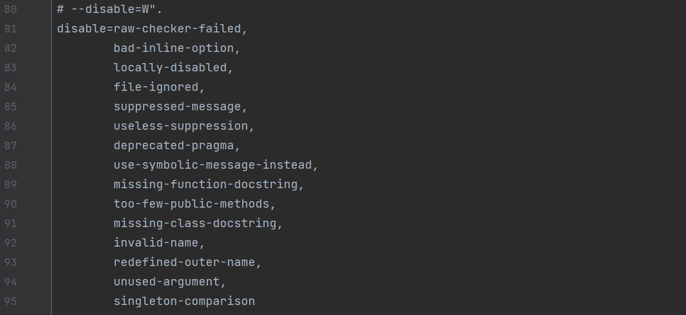

Arrange-Act-Assert

[Image. From Samantha Moran Nov.21,2021)]
Order of Operations
- Arrange inputs and targets. Arrange steps should set up the test case. Does the test require any objects or special settings? Does it need to prep a database? Does it need to log into a web app? Handle all of these operations at the start of the test. Act on the target behavior. Act steps should cover the main thing to be tested. This could be calling a function or method, calling a REST API, or interacting with a web page. Keep actions focused on the target behavior. Assert expected outcomes. Act steps should elicit some sort of response. Assert steps verify the goodness or badness of that response. Sometimes, assertions are as simple as checking numeric or string values. Other times, they may require checking multiple facets of a system. Assertions will ultimately determine if the test passes or fails.
Continued
More tips and tricks| 4 | For pylint not to check a module- #pylint: skip-file |
|---|---|
| 3 | Use a code for messages instead of memorizing- # pylint: disable=fixme, line-too-long |
| 2 | Disables a message of the following line- # pylint: disable-next=msgid |
| 1 | To view which lines are not being covered, use this command: # pytest --pylint --cov --cov-report term-missing |

[Image. From Pixabay by designwebjae. Jan 26 ,2018. (https://pixabay.com/images/id-3109378/)]